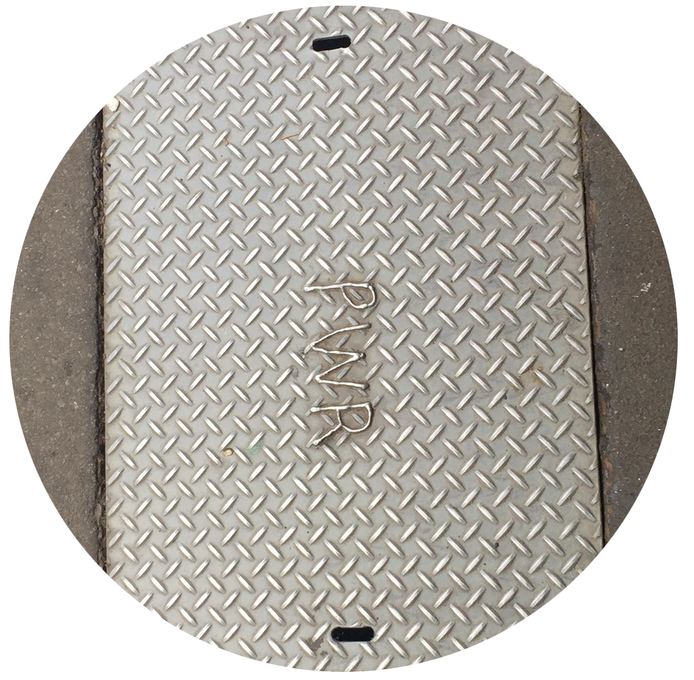
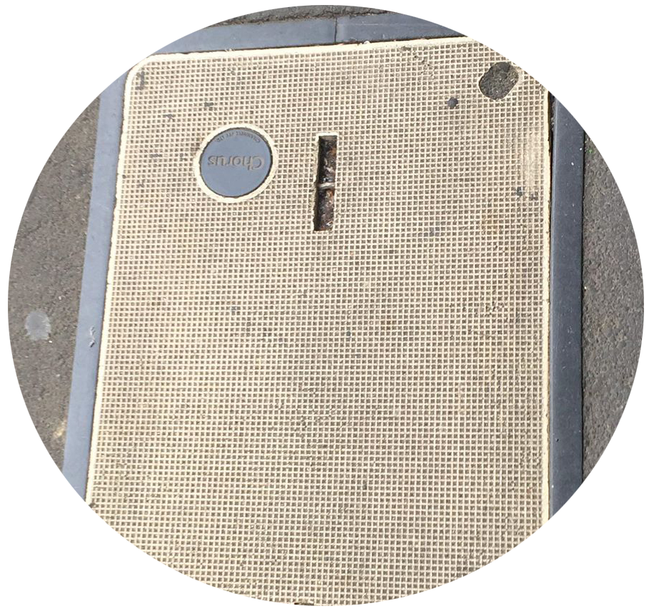

ELECTRICITY NETWORK - United Networks
We own the network lines that deliver power. Our network consists of more than 18,000kms of overhead lines and underground cables.

UNDERGROUND POWER NETWORK
This could be connected to any network delivering power, fiber, broadband or any other source of communication.

FIBRE INSTALLATION
Placed in streets to create a faster and a more direct method for connecting internet from home to home.